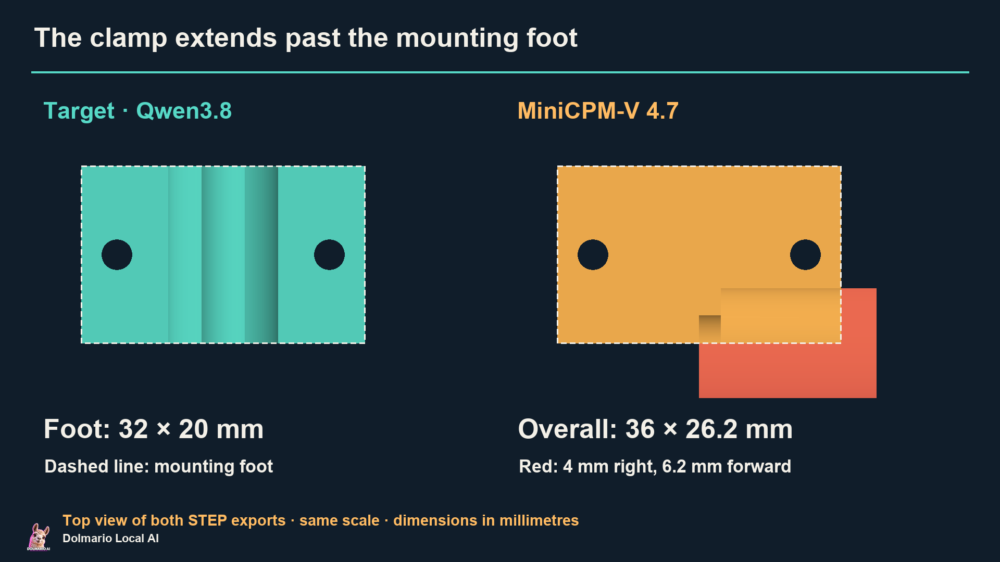
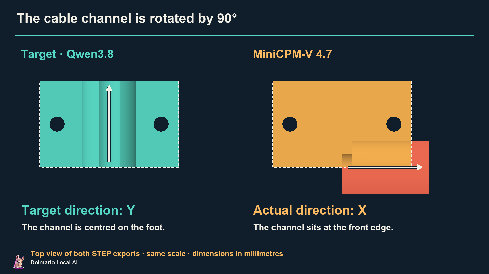
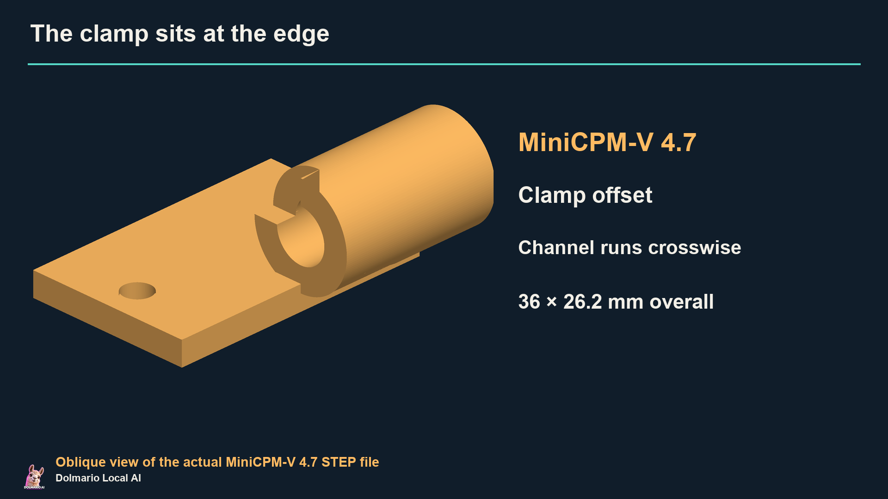

A dimensioned cable clip shows which combinations produce a verifiable drawing. The enclosure adds a second question. Can its dimensions still change after saving?
Qwen · Alibaba Cloud
The local 27B file uses Unsloth’s UD-Q4_K_XL quantization. OpenCode 1, OpenCode 2, Cline Core, Crush and Hermes each built a checked cable clip with this same model. All five individual runs passed the geometry checks, including the reopened FreeCAD file and STL geometry.
Local file in the first listed test · Qwen3.8-27B-UD-Q4_K_XL.gguf
Axion · Axion1-0
The research team publishes a reproduction checkpoint for scientific reasoning and tool use under Axion1-0. It has about 35 billion parameters, with around three billion active per token. Our Q4_K_M run repeated unsuccessful FreeCAD calls and was stopped under supervision. It left no clip to verify.
Local file in the first listed test · Axion-1.0-35B.Q4_K_M.gguf
OpenBMB
OpenBMB’s vision and text model has about 35 billion parameters, with around three billion active per token. On the Q4_K_M clip the clamp sits on the edge of the base and overhangs it. The channel runs at 90° to the required direction. The whole part measures 36 × 26.2 mm from above. The specified base is 32 × 20 mm. Atomic Chat publishes the separate community version labelled “Uncensored”. The local AD-Q4_K-IQ4_XS session ended normally, but its STEP had no usable solid and it produced no STL. The two quantizations differ. The name of the local variant matches the model card. A hash match to its current revision has not been established.
Local file in the first listed test · MiniCPM-V-4_7-35B-A3B-Q4_K_M.gguf



Recursive Superintelligence
This text-based coding model has 39.8 billion parameters, about 2.5 billion active per token. Its first run reached the thinking limit before the first CAD call. Its second clip passed the geometry checks. The tool log also shows that Flint had read the reference construction in the test folder. We stopped a subsequent tool loop. Its independent performance from the brief remains open.
Local file in the first listed test · flint-UD-Q4_K_XL.gguf
Thinking Machines Lab
Inkling handles text and images and reuses its middle layers. It has 26.4 billion stored parameters. Its clip also passed after the combined runtime and model update. Both sizes had been exported before the first enclosure run hit a graphics error. The next enclosure run ended before export at the image connection. The web-enabled run saved a 120 mm design before a graphics error. We then changed the length cell and exported 140 mm on the CPU. The parts still need a physical print.
Local file in the first listed test · Inkling-2-Mini-UD-Q4_K_XL.gguf
| Assistant | Runtime (min:s) |
|---|---|
| OpenCode 1 | 29:59 |
| OpenCode 2 | 29:32 |
| Cline Core | 30:21 |
| Crush | 40:39 |
| Hermes | 61:19 |
One run per assistant on the same 64 GB EVO-X2. Other jobs and machines can give different timings.
Ten CAD files. The 120 mm and 140 mm native drawings were saved before the Windows graphics events. Both sizes reopened and passed the geometry checks.
The clip passed again. On the enclosure, a preview arrived as tool text. The run ended before its first completed export. A later connector check confirmed intact image delivery with scripted model replies.
Inkling found the public project. After we helped reconnect FreeCAD, the model saved five files for 120 mm and stopped before the longer version. We reopened the drawing, set A1 to 140 mm and exported both parts on the CPU. The ZIP start page links these two versions.
The PC froze.
Windows events 0x141 and 0x117 were documented for run A only. Microsoft describes them as a graphics engine and a display driver failing to respond in time. The underlying cause is unresolved.